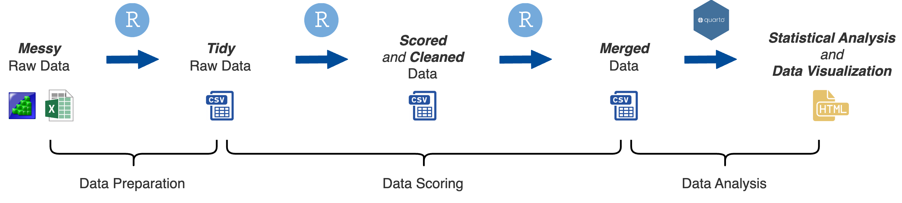
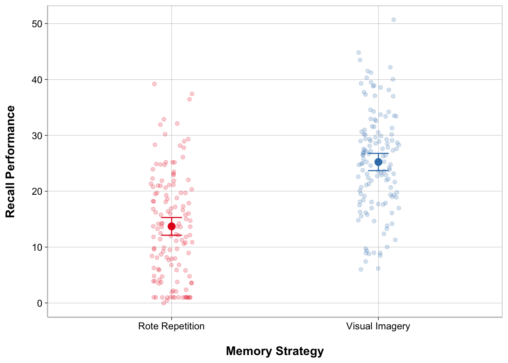
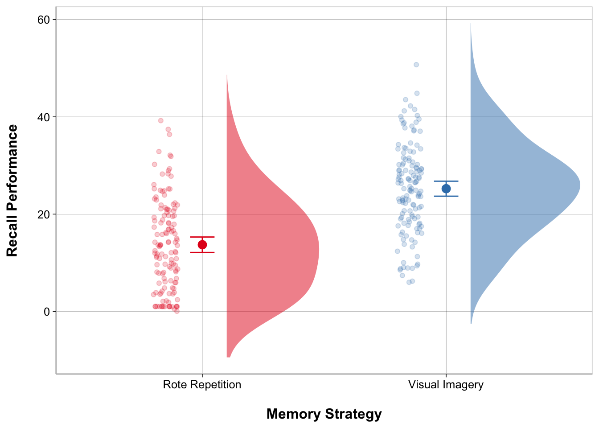
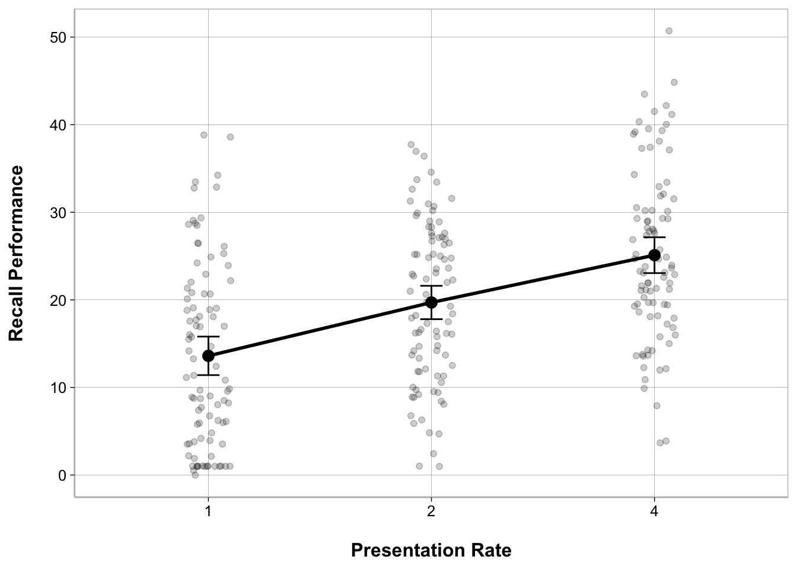
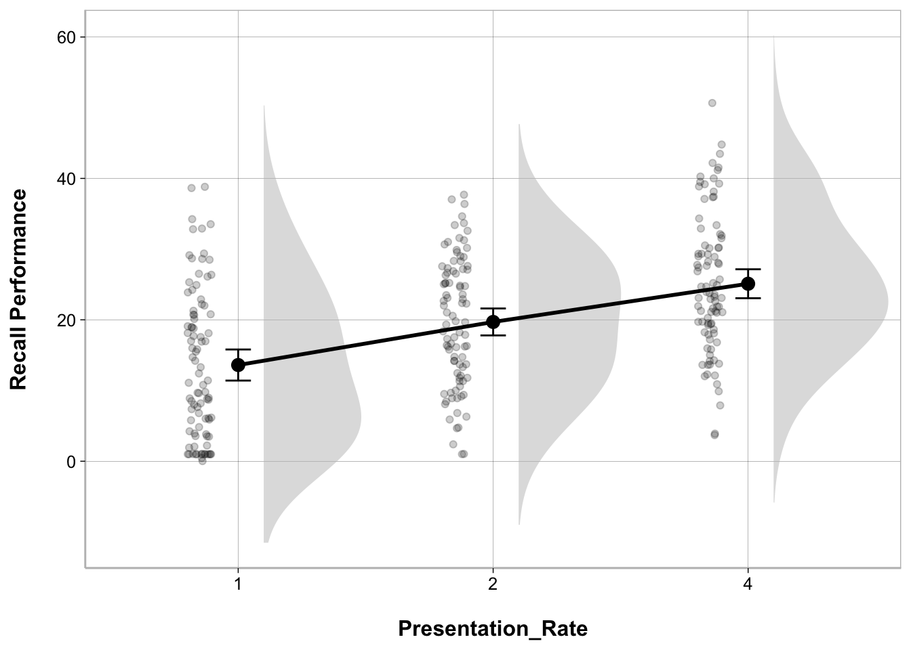
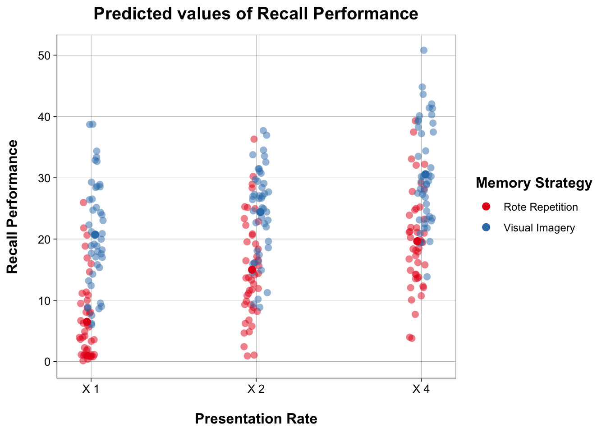
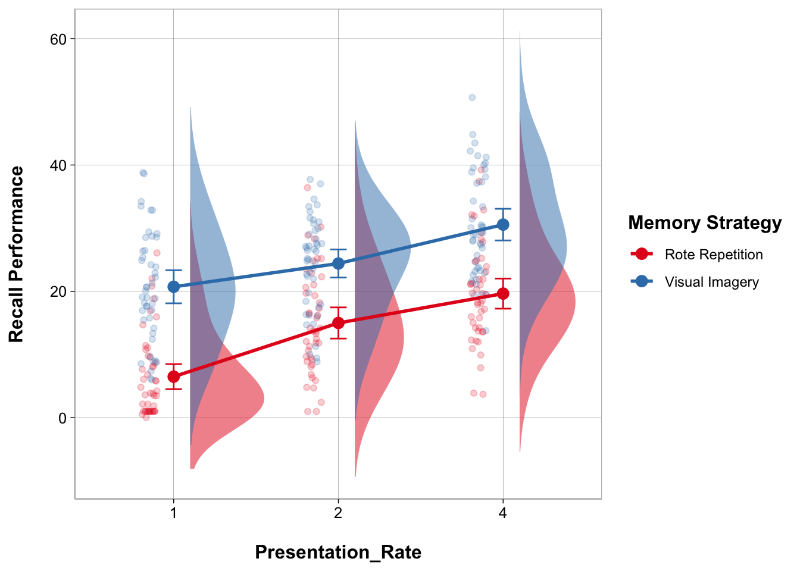

englelab::get_template(analysis_script = TRUE)7 ANOVA
Statistical Analysis

At this stage you have fully processed your data and have it in a format that is ready for statistical analysis. The next step is to conduct formal statistical models on your data and visualize the results.
This chapter will cover how to perform various types of ANOVAs.
Setup Quarto Document
If you want to follow along, create an R Project (if you don’t have one already for this guide) with at least the following folders
📁 analyses
📁 data
Create an empty Quarto document for this chapter.
Note
Alternatively, download the englelab analysis Quarto template rather than starting from an empty document.
YAML
---
title: "Document Title"
author: Your Name
date: today
theme: default
format:
html:
code-fold: true
code-tools: true
code-link: true
toc: true
toc-depth: 1
toc-location: left
page-layout: full
df-print: paged
execute:
error: true
warning: true
self-contained: true
editor_options:
chunk_output_type: console
editor: visual
---Headers
- Create a level 1 header for a Setup section to load packages and set some theme options:
# Setup- Create a tabset with a tab to load packages and another to set a
ggplot2theme
You can add multiple tabs easily by going to
In the toolbar: Insert -> Tabset…
::: panel-tabset
## Required Packages
## Plot Theme
:::R Code Chunks
- Add an R code chunk below the Required Packages header and load the following packages,
- Add an R code chunk below the Plot Theme header and set your own
ggplot2theme to automatically be used in the rest of the document.
This is a custom theme theme_spacious() I use across all of my plots. It might look like there is a lot going on, but it mainly does two things
- Increases the spacing between axis titles and the axis legend (the default
ggplot2spacing bothers me!) - Bolds the title elements in the plot
I use theme_spacious() along with a ggplot2 theme such as theme_linedraw() . Using theme_set() will automatically apply these themes to all ggplot2 plots generated in this document.
Note
See Class 8: Data Visualization in the R Workshop for a thorough tutorial on ggplot2
theme_spacious <- function(font.size = 14, bold = TRUE){
key.size <- trunc(font.size * .8)
if (bold == TRUE) {
face.type <- "bold"
} else {
face.type <- "plain"
}
theme(text = element_text(size = font.size),
axis.title.x = element_text(margin = margin(t = 15, r = 0,
b = 0, l = 0),
face = face.type),
axis.title.y = element_text(margin = margin(t = 0, r = 15,
b = 0, l = 0),
face = face.type),
legend.title = element_text(face = face.type),
legend.spacing = unit(20, "pt"),
legend.text = element_text(size = key.size),
plot.title = element_text(face = face.type, hjust = .5,
margin = margin(b = 10)),
plot.caption = element_text(hjust = 0, size = key.size,
margin = margin(t = 20)),
strip.background = element_rect(fill = "white", color = "white"),
strip.text = element_text(color = "black",
face = face.type))
}
output_theme <- theme_linedraw() +
theme_spacious(font.size = 12) +
theme(panel.border = element_rect(color = "gray"),
axis.line.x = element_line(color = "gray"),
axis.line.y = element_line(color = "gray"),
panel.grid.minor.x = element_blank(),
panel.grid.minor.y = element_blank())
theme_set(output_theme)Example Data Set
Suppose we were interested in memory and wanted to find out if recall can be improved by using visual imagery while memorizing a list of words. In addition to the memory strategy that is used, say we were also interested in the effect presentation rate on memory and if that interacted with memory strategy.
To investigate this, we conducted an experiment to look at the effect of Memory Strategy and Presentation Rate on Recall Performance using a 2 x 3 mixed-factorial design with Memory Strategy as a between-subjects factor (Rote Repetition vs. Visual Imagery) and Presentation Rate as a within-subjects factor (1 second, 2 seconds, and 4 seconds).
In every condition subjects were told to use a certain strategy while memorizing a list of 50 words presented sequentially and were asked to freely recall as many words as possible immediately after the last presented word. Every subject performed the memory task three times at the 3 different presentation rates, the order of the tasks was counterbalanced.
You can download the data for this hypothetical experiment and save it in your data folder:
Import Data
- Create a level 1 header for importing and getting the data ready for statistical analysis
# Data- Create a tabset with a tab to import the data and another tab to get the data ready
::: panel-tabset
## Import Data
## Get Data Ready for Models
:::- Create an R code chunk below the Import Data tab header
Specify Factor Levels
When dealing with categorical variables for statistical analyses in R, it is usually a good idea to define the order of the categories as this will by default determine which category is treated as the reference (comparison group). More complex contrast codes will not be covered in this guide.
Let’s set factor levels for Memory Strategy and Presentation Rate
Remember you can use colnames() to get the columns in a data frame and unique() to evaluate the unique values in a column.
- Create an R code chunk below the Get Data Ready for Models tab header
From here on out you can create your own header and tabsets as you see fit
t-test
A t-test can be performed to test whether a difference between 2 means is statistically significant. There are three general types of t-tests.
One-sample t-test: Used to compare a sample mean to a population mean.
Two-sample t-test for independent samples: Used to compare means from two different groups of subjects (between-subject factor).
Two-sample t-test for dependent samples: Used to compare means from two conditions with the same subjects (within-subject factor).
The t.test() function can be used to compute any of these t-tests.
t-test - independent samples
We can perform a two-sample t-test for independent samples to compare recall performance for the group of subjects assigned to the rote repetition condition vs. those assigned to the visual imagery condition.
t_ms <- t.test(recall_data$Recall_Performance ~
recall_data$Memory_Strategy,
var.equal = TRUE)The default way to print output from statistical models in R is either by using a summary() function, or simply printing the statistical model object, t_ms , to the console:
t_ms
Two Sample t-test
data: recall_data$Recall_Performance by recall_data$Memory_Strategy
t = -10.289, df = 268, p-value < 2.2e-16
alternative hypothesis: true difference in means between group Rote Repetition and group Visual Imagery is not equal to 0
95 percent confidence interval:
-13.724492 -9.315508
sample estimates:
mean in group Rote Repetition mean in group Visual Imagery
13.70963 25.22963 We can use model_parameters() , from parameters, to get the test statistics and cohens_d(), from effectsize to get the standardized effect size estimates and print a nice looking table using display from the parameters package.
model_parameters(t_ms) |>
display(align = "left")| Parameter | Group | recall_data\(Memory_Strategy = Rote Repetition | recall_data\)Memory_Strategy = Visual Imagery | Difference | 95% CI | t(268) | p | |
|---|---|---|---|---|---|---|---|
| recall_data\(Recall_Performance | recall_data\)Memory_Strategy | 13.71 | 25.23 | -11.52 | (-13.72, -9.32) | -10.29 | < .001 |
Alternative hypothesis: true difference in means between group Rote Repetition and group Visual Imagery is not equal to 0
t-test - dependent samples
We can perform a two-sample t-test for dependent samples to compare the three presentation rate conditions because this variable was a within-subject factor.
To do so, we need to create three different data frames for each of the pairwise comparisons (there might be a simpler way to do this using a different t-test function). We can use filter() from dplyr to do this.
data_pr_1v2 <- filter(recall_data,
Presentation_Rate == 1 | Presentation_Rate == 2)
data_pr_1v4 <- filter(recall_data,
Presentation_Rate == 1 | Presentation_Rate == 4)
data_pr_2v4 <- filter(recall_data,
Presentation_Rate == 2 | Presentation_Rate == 4)
t_pr_1v2 <- t.test(data_pr_1v2$Recall_Performance ~
data_pr_1v2$Presentation_Rate,
var.equal = TRUE, paired = TRUE)
t_pr_1v4 <- t.test(data_pr_1v4$Recall_Performance ~
data_pr_1v4$Presentation_Rate,
var.equal = TRUE, paired = TRUE)
t_pr_2v4 <- t.test(data_pr_2v4$Recall_Performance ~
data_pr_2v4$Presentation_Rate,
var.equal = TRUE, paired = TRUE)t_pr_1v2
Paired t-test
data: data_pr_1v2$Recall_Performance by data_pr_1v2$Presentation_Rate
t = -5.9057, df = 89, p-value = 6.302e-08
alternative hypothesis: true mean difference is not equal to 0
95 percent confidence interval:
-8.143428 -4.043238
sample estimates:
mean difference
-6.093333 t_pr_1v4
Paired t-test
data: data_pr_1v4$Recall_Performance by data_pr_1v4$Presentation_Rate
t = -10.278, df = 89, p-value < 2.2e-16
alternative hypothesis: true mean difference is not equal to 0
95 percent confidence interval:
-13.717908 -9.273203
sample estimates:
mean difference
-11.49556 t_pr_2v4
Paired t-test
data: data_pr_2v4$Recall_Performance by data_pr_2v4$Presentation_Rate
t = -4.6944, df = 89, p-value = 9.642e-06
alternative hypothesis: true mean difference is not equal to 0
95 percent confidence interval:
-7.688817 -3.115628
sample estimates:
mean difference
-5.402222 We can use model_parameters() , from parameters, to get the test statistics and cohens_d(), from modelbased to get the standardized effect size estimates and print a nice looking table using display from the parameters package.
model_parameters(t_pr_1v2) |>
display(align = "left")| Parameter | Group | Difference | t(89) | p | 95% CI |
|---|---|---|---|---|---|
| data_pr_1v2\(Recall_Performance | data_pr_1v2\)Presentation_Rate | -6.09 | -5.91 | < .001 | (-8.14, -4.04) |
Alternative hypothesis: true mean difference is not equal to 0
model_parameters(t_pr_1v4) |>
display(align = "left")| Parameter | Group | Difference | t(89) | p | 95% CI |
|---|---|---|---|---|---|
| data_pr_1v4\(Recall_Performance | data_pr_1v4\)Presentation_Rate | -11.50 | -10.28 | < .001 | (-13.72, -9.27) |
Alternative hypothesis: true mean difference is not equal to 0
model_parameters(t_pr_2v4) |>
display(align = "left")| Parameter | Group | Difference | t(89) | p | 95% CI |
|---|---|---|---|---|---|
| data_pr_2v4\(Recall_Performance | data_pr_2v4\)Presentation_Rate | -5.40 | -4.69 | < .001 | (-7.69, -3.12) |
Alternative hypothesis: true mean difference is not equal to 0
ANOVA
Depending on your factor design, you may need to perform different types of ANOVAs. We have a 2 x 3 mixed-factorial design and so will ultimately want to perform a Two-way ANOVA with a between-subject and a within-subject factors. However, for the sake of this exercise, let’s walk through different types of ANOVAs.
Between-subjects ANOVA
Within-subjects ANOVA (also called repeated-measures ANOVA)
Mixed-factor ANOVA
In R, there are different packages one can use to conduct an ANOVA. We will use the afex package to conduct ANOVAs with aov_car().
Between-Subjects ANOVA
A between-subjects ANOVA is conducted when there are only between-subject factors in the study design.
First let’s reduce our data frame by aggregating over the within-subjects factor (pretend that we only have a between-subjects design).
Model
anova_bs <- aov_car(Recall_Performance ~
Memory_Strategy + Error(Subject),
data = data_model)The Error(Subject) syntax in the formula tells aov_car() what column name contains subject ids.
Tables
View the different tabs to see different output options:
anova_bsAnova Table (Type 3 tests)
Response: Recall_Performance
Effect df MSE F ges p.value
1 Memory_Strategy 1, 88 26.54 112.50 *** .561 <.001
---
Signif. codes: 0 '***' 0.001 '**' 0.01 '*' 0.05 '+' 0.1 ' ' 1You can use model_parameters() to get an ANOVA table. You should specify type = 3 to get Type III sum of squares. You can also request to obtain omega-squared (or eta-squared) effect size estimate.
model_parameters(anova_bs, type = 3,
effectsize_type = "omega",
ci = .95) |>
display(align = "left")| Parameter | Sum_Squares | df | Mean_Square | F | p | Omega2 | Omega2 95% CI |
|---|---|---|---|---|---|---|---|
| (Intercept) | 34115.98 | 1 | 34115.98 | 1285.35 | < .001 | ||
| Memory_Strategy | 2985.98 | 1 | 2985.98 | 112.50 | < .001 | 0.55 | (0.44, 1.00) |
| Residuals | 2335.71 | 88 | 26.54 |
Anova Table (Type 3 tests)
You can use estimate_contrasts(), from modelbased, to get post-hoc comparisons.
estimate_contrasts(anova_bs,
contrast = "Memory_Strategy",
p_adjust = "tukey") |>
display(align = "left")| Level1 | Level2 | Difference | 95% CI | SE | t(88) | p |
|---|---|---|---|---|---|---|
| Rote Repetition | Visual Imagery | -11.52 | (-13.68, -9.36) | 1.09 | -10.61 | < .001 |
Marginal contrasts estimated at Memory_Strategy p-value adjustment method: Tukey
My modeloutput package provides a way to display ANOVA tables in output format similar to other statistical software packages like JASP or SPSS. Add anova_tables(contrast = "Memory_Strategy") to get a table for post-hoc comparisons.
anova_tables(anova_bs, contrast = "Memory_Strategy")| ANOVA Table: Recall_Performance | |||||||
|---|---|---|---|---|---|---|---|
| Term | SS | df | MS | F | p | η2 | ω2 |
| (Intercept) | 34115.983 | 1.000 | 34115.983 | 1285.352 | <0.001 | ||
| Memory_Strategy | 2985.984 | 1.000 | 2985.984 | 112.500 | <0.001 | 0.561 | 0.553 |
| Residuals | 2335.709 | 88.000 | 26.542 | ||||
| Model: aov_car(Recall_Performance ~ Memory_Strategy) | |||||||
| df correction: none | |||||||
| N = 90 | |||||||
| Post-hoc Comparisons: Memory_Strategy | ||||||||
|---|---|---|---|---|---|---|---|---|
| Level 1 | Level 2 | Difference | CI 95% | SE | df | t | p | Cohen's D |
| Rote Repetition | Visual Imagery | −11.520 | −13.678 — −9.362 | 1.086 | 88 | −10.607 | <0.001 | −1.490 |
| p-values are uncorrected. | ||||||||
Figures
View the different tabs to see different output options:
The main package in R to create and customize plots is ggplot2. However, there is definitely a bit of a learning curve to ggplot2. Instead, the sjPlot package offers convenient ways to plot the results of statistical analyses using plot_model().
plot_model() actually generates a ggplot2 object so you can further modify using ggplot2 code.
The most customizable way to plot model results is using the ggplot2 package.
ggplot(recall_data, aes(x = Memory_Strategy,
y = Recall_Performance,
color = Memory_Strategy)) +
geom_point(position = position_jitter(width = .1), alpha = .2) +
geom_point(stat = "summary", fun = mean, size = 3) +
geom_errorbar(stat = "summary",
fun.data = mean_cl_normal, width = .1) +
labs(x = "Memory Strategy", y = "Recall Performance") +
scale_color_brewer(palette = "Set1") +
guides(color = "none")
My modeloutput function has a geom_flat_violin() function to create the cloud part of the raincloud plot. There are some other modifications that have to be made to other elements of the ggplot as well.
ggplot(recall_data, aes(x = Memory_Strategy,
y = Recall_Performance,
color = Memory_Strategy,
fill = Memory_Strategy)) +
geom_flat_violin(position = position_nudge(x = .1, y = 0),
adjust = 1.5, trim = FALSE,
alpha = .5, colour = NA) +
geom_point(aes(as.numeric(Memory_Strategy) - .15),
position = position_jitter(width = .05), alpha = .2) +
geom_point(stat = "summary", fun = mean, size = 3) +
geom_errorbar(stat = "summary",
fun.data = mean_cl_normal, width = .1) +
labs(x = "Memory Strategy", y = "Recall Performance") +
scale_color_brewer(palette = "Set1") +
scale_fill_brewer(palette = "Set1") +
guides(fill = "none", color = "none")
Within-Subjects ANOVA
A within-subjects ANOVA (or repeated-measures ANOVA) is conducted when there is only a within-subjects factor in the study design.
First let’s reduce our data frame by aggregating over the between-subjects factor (pretend that we only have a within-subjects design).
Statistically, the main difference between a between-subject factor and a within-subject factor is what goes into the error term. Recall that within-subject factor designs are more powerful. One reason for this is that the Error or Residual term in the model becomes smaller because Subject gets entered into the model as a variable (we are modelling the effect of differences between subjects). We need to specify the structure of the residual term for within-subject designs.
In aov_car() we can specify the error term as Error(Subject/Within-Subject Factor).
Model
anova_ws <- aov_car(Recall_Performance ~ Presentation_Rate +
Error(Subject/Presentation_Rate),
data = recall_data)Tables
View the different tabs to see different output options:
anova_wsAnova Table (Type 3 tests)
Response: Recall_Performance
Effect df MSE F ges p.value
1 Presentation_Rate 1.97, 175.15 55.48 54.53 *** .188 <.001
---
Signif. codes: 0 '***' 0.001 '**' 0.01 '*' 0.05 '+' 0.1 ' ' 1
Sphericity correction method: GG You can use model_parameters() to get an ANOVA table. You should specify type = 3 to get Type III sum of squares. You can also request to obtain omega-squared (or eta-squared) effect size estimate.
model_parameters(anova_ws, type = 3,
effectsize_type = "omega",
ci = .95) |>
display(align = "left")| Parameter | Sum_Squares | Sum_Squares_Error | df | df (error) | Mean_Square | F | p | Omega2 (partial) | Omega2 95% CI |
|---|---|---|---|---|---|---|---|---|---|
| Presentation_Rate | 5953.82 | 9718.28 | 1.97 | 175.15 | 55.48 | 54.53 | < .001 | 0.18 | (0.10, 1.00) |
Anova Table (Type 3 tests)
You can use estimate_contrasts(), from modelbased, to get post-hoc comparisons.
estimate_contrasts(anova_ws,
contrast = "Presentation_Rate",
p_adjust = "bonferroni") |>
display(align = "left")| Level1 | Level2 | Difference | 95% CI | SE | t(89) | p |
|---|---|---|---|---|---|---|
| X1 | X2 | -6.09 | ( -8.61, -3.58) | 1.03 | -5.91 | < .001 |
| X1 | X4 | -11.50 | (-14.22, -8.77) | 1.12 | -10.28 | < .001 |
| X2 | X4 | -5.40 | ( -8.21, -2.59) | 1.15 | -4.69 | < .001 |
Marginal contrasts estimated at Presentation_Rate p-value adjustment method: Bonferroni
My modeloutput package provides a way to display ANOVA tables in output format similar to other statistical software packages like JASP or SPSS. Add anova_tables(contrast = "Presentation_Rate") to get a table for post-hoc comparisons.
anova_tables(anova_ws, contrast = "Presentation_Rate")| ANOVA Table: Recall_Performance | ||||||||||
|---|---|---|---|---|---|---|---|---|---|---|
| Term | SS | SS Error | df | df Error | MS | MS Error | F | p | ηp2 | ωp2 |
| Presentation_Rate | 5953.815 | 9718.278 | 1.968 | 175.154 | 55.484 | 1.018 | 54.525 | <0.001 | 0.380 | 0.184 |
| Model: aov_car(Recall_Performance ~ (Presentation_Rate) + Error(Subject/(Presentation_Rate))) | ||||||||||
| df correction: Greenhouse-Geisser | ||||||||||
| N = 90 | ||||||||||
| Post-hoc Comparisons: Presentation_Rate | ||||||||
|---|---|---|---|---|---|---|---|---|
| Level 1 | Level 2 | Difference | CI 95% | SE | df | t | p | Cohen's D |
| 1 | 2 | −6.093 | −8.143 — −4.043 | 1.032 | 89 | −5.906 | <0.001 | −0.562 |
| 1 | 4 | −11.496 | −13.718 — −9.273 | 1.118 | 89 | −10.278 | <0.001 | −1.060 |
| 2 | 4 | −5.402 | −7.689 — −3.116 | 1.151 | 89 | −4.694 | <0.001 | −0.498 |
| p-values are uncorrected. | ||||||||
Figures
View the different tabs to see different output options:
The main package in R to create and customize plots is ggplot2. However, there is definitely a bit of a learning curve to ggplot2. Instead, the sjPlot package offers convenient ways to plot the results of statistical analyses using plot_model().
plot_model() actually generates a ggplot2 object so you can further modify using ggplot2 code.
The most customizable way to plot model results is using the ggplot2 package.
ggplot(recall_data, aes(x = Presentation_Rate,
y = Recall_Performance)) +
geom_point(position = position_jitter(width = .1), alpha = .2) +
geom_line(stat = "summary", fun = mean, linewidth = 1, group = 1) +
geom_point(stat = "summary", fun = mean, size = 3) +
geom_errorbar(stat = "summary",
fun.data = mean_cl_normal, width = .1) +
labs(x = "Presentation Rate", y = "Recall Performance")
My modeloutput function has a geom_flat_violin() function to create the cloud part of the raincloud plot. There are some other modifications that have to be made to other elements of the ggplot as well.
ggplot(recall_data, aes(x = Presentation_Rate,
y = Recall_Performance)) +
geom_flat_violin(position = position_nudge(x = .1, y = 0),
adjust = 1.5, trim = FALSE,
alpha = .5, fill = "gray", color = NA) +
geom_point(aes(as.numeric(Presentation_Rate) - .15),
position = position_jitter(width = .05), alpha = .2) +
geom_line(stat = "summary", fun = mean, linewidth = 1, group = 1) +
geom_point(stat = "summary", fun = mean, size = 3) +
geom_errorbar(stat = "summary",
fun.data = mean_cl_normal, width = .1) +
labs(x = "Presentation_Rate", y = "Recall Performance")
Mixed-Factors ANOVA
A Mixed-Factors ANOVA is conducted when you have between and within-subject factors in your design. In the case of the data we are working with here we have a Two-way mixed-factors ANOVA; or a 2 x 3 mixed-factors ANOVA.
The setup for this is very similar but we need to specify an interaction term between the two factors. There are two different ways to do this:
- Specify each main effect and interaction terms separately
Presentation_Rate + Memory_Strategy + Presentation_Rate:Memory_Strategy- Use a shorthand that includes all main effects and the interaction term
Presentation_Rate*Memory_StrategyModel
anova_mixed <- aov_car(Recall_Performance ~
Presentation_Rate*Memory_Strategy +
Error(Subject/Presentation_Rate),
data = recall_data)Tables
View the different tabs to see different output options:
anova_mixedAnova Table (Type 3 tests)
Response: Recall_Performance
Effect df MSE F ges p.value
1 Memory_Strategy 1, 88 79.63 112.50 *** .353 <.001
2 Presentation_Rate 1.95, 171.62 55.04 55.47 *** .266 <.001
3 Memory_Strategy:Presentation_Rate 1.95, 171.62 55.04 2.54 + .016 .083
---
Signif. codes: 0 '***' 0.001 '**' 0.01 '*' 0.05 '+' 0.1 ' ' 1
Sphericity correction method: GG You can use model_parameters() to get an ANOVA table. You should specify type = 3 to get Type III sum of squares. You can also request to obtain omega-squared (or eta-squared) effect size estimate.
model_parameters(anova_mixed, type = 3,
effectsize_type = "omega",
ci = .95) |>
display(align = "left")| Parameter | Sum_Squares | Sum_Squares_Error | df | df (error) | Mean_Square | F | p | Omega2 (partial) | Omega2 95% CI |
|---|---|---|---|---|---|---|---|---|---|
| Memory_Strategy | 8957.95 | 7007.13 | 1.00 | 88.00 | 79.63 | 112.50 | < .001 | 0.55 | (0.44, 1.00) |
| Presentation_Rate | 5953.82 | 9445.49 | 1.95 | 171.62 | 55.04 | 55.47 | < .001 | 0.26 | (0.17, 1.00) |
| Memory_Strategy:Presentation_Rate | 272.79 | 9445.49 | 1.95 | 171.62 | 55.04 | 2.54 | 0.083 | 9.85e-03 | (0.00, 1.00) |
Anova Table (Type 3 tests)
You can use estimate_contrasts(), from modelbased, to get post-hoc comparisons.
estimate_contrasts(anova_mixed,
contrast = "Presentation_Rate",
at = "Memory_Strategy",
p_adjust = "bonferroni") |>
display(align = "left")| Level1 | Level2 | Memory_Strategy | Difference | 95% CI | SE | t(88) | p |
|---|---|---|---|---|---|---|---|
| X1 | X2 | Rote Repetition | -8.50 | (-11.97, -5.03) | 1.42 | -5.98 | < .001 |
| X1 | X2 | Visual Imagery | -3.69 | ( -7.16, -0.22) | 1.42 | -2.59 | 0.033 |
| X1 | X4 | Rote Repetition | -13.15 | (-16.98, -9.31) | 1.57 | -8.37 | < .001 |
| X1 | X4 | Visual Imagery | -9.84 | (-13.68, -6.01) | 1.57 | -6.26 | < .001 |
| X2 | X4 | Rote Repetition | -4.65 | ( -8.63, -0.66) | 1.63 | -2.85 | 0.016 |
| X2 | X4 | Visual Imagery | -6.16 | (-10.14, -2.17) | 1.63 | -3.77 | < .001 |
Marginal contrasts estimated at Presentation_Rate p-value adjustment method: Bonferroni
My modeloutput package provides a way to display ANOVA tables in output format similar to other statistical software packages like JASP or SPSS. Add anova_tables(contrast = "Presentation_Rate") to get a table for post-hoc comparisons.
anova_tables(anova_mixed,
contrast = c("Presentation_Rate", "Memory_Strategy"),
at = c("Presentation_Rate", "Memory_Strategy"))| ANOVA Table: Recall_Performance | ||||||||||
|---|---|---|---|---|---|---|---|---|---|---|
| Term | SS | SS Error | df | df Error | MS | MS Error | F | p | ηp2 | ωp2 |
| Memory_Strategy | 8957.952 | 7007.126 | 1.000 | 88.000 | 79.626 | 0.708 | 112.500 | <0.001 | 0.561 | 0.553 |
| Presentation_Rate | 5953.815 | 9445.486 | 1.950 | 171.619 | 55.037 | 0.992 | 55.469 | <0.001 | 0.387 | 0.260 |
| Memory_Strategy:Presentation_Rate | 272.792 | 9445.486 | 1.950 | 171.619 | 55.037 | 21.655 | 2.541 | 0.083 | 0.028 | 0.010 |
| Model: aov_car(Recall_Performance ~ (Presentation_Rate) * (Memory_Strategy) + Error(Subject/(Presentation_Rate))) | ||||||||||
| df correction: Greenhouse-Geisser | ||||||||||
| N = 90 | ||||||||||
| Post-hoc Comparisons: Presentation_Rate | ||||||||
|---|---|---|---|---|---|---|---|---|
| Level 1 | Level 2 | Difference | CI 95% | SE | df | t | p | Cohen's D |
| 1 | 2 | −6.093 | −8.091 — −4.095 | 1.005 | 88 | −6.061 | <0.001 | −0.562 |
| 1 | 4 | −11.496 | −13.703 — −9.288 | 1.111 | 88 | −10.348 | <0.001 | −1.060 |
| 2 | 4 | −5.402 | −7.697 — −3.108 | 1.155 | 88 | −4.679 | <0.001 | −0.498 |
| p-values are uncorrected. | ||||||||
| Post-hoc Comparisons: Memory_Strategy | ||||||||
|---|---|---|---|---|---|---|---|---|
| Level 1 | Level 2 | Difference | CI 95% | SE | df | t | p | Cohen's D |
| Rote Repetition | Visual Imagery | −11.520 | −13.678 — −9.362 | 1.086 | 88 | −10.607 | <0.001 | −1.062 |
| p-values are uncorrected. | ||||||||
| Post-hoc Comparisons: Presentation_Rate x Memory_Strategy | |||||||||
|---|---|---|---|---|---|---|---|---|---|
| Level 1 | Level 2 | Memory_Strategy | Difference | CI 95% | SE | df | t | p | Cohen's D |
| 1 | 2 | Rote Repetition | −8.500 | −11.326 — −5.674 | 1.422 | 88 | −5.978 | <0.001 | −0.784 |
| 1 | 2 | Visual Imagery | −3.687 | −6.512 — −0.861 | 1.422 | 88 | −2.593 | 0.011 | −0.340 |
| 1 | 4 | Rote Repetition | −13.149 | −16.271 — −10.027 | 1.571 | 88 | −8.369 | <0.001 | −1.212 |
| 1 | 4 | Visual Imagery | −9.842 | −12.964 — −6.720 | 1.571 | 88 | −6.265 | <0.001 | −0.908 |
| 2 | 4 | Rote Repetition | −4.649 | −7.894 — −1.404 | 1.633 | 88 | −2.847 | 0.005 | −0.429 |
| 2 | 4 | Visual Imagery | −6.156 | −9.400 — −2.911 | 1.633 | 88 | −3.770 | <0.001 | −0.568 |
| p-values are uncorrected. | |||||||||
| Post-hoc Comparisons: Memory_Strategy x Presentation_Rate | |||||||||
|---|---|---|---|---|---|---|---|---|---|
| Level 1 | Level 2 | Presentation_Rate | Difference | CI 95% | SE | df | t | p | Cohen's D |
| Rote Repetition | Visual Imagery | 1 | −14.227 | −17.464 — −10.989 | 1.629 | 88 | −8.732 | <0.001 | −1.312 |
| Rote Repetition | Visual Imagery | 2 | −9.413 | −12.687 — −6.139 | 1.647 | 88 | −5.714 | <0.001 | −0.868 |
| Rote Repetition | Visual Imagery | 4 | −10.920 | −14.328 — −7.512 | 1.715 | 88 | −6.368 | <0.001 | −1.007 |
| p-values are uncorrected. | |||||||||
Figures
View the different tabs to see different output options:
The main package in R to create and customize plots is ggplot2. However, there is definitely a bit of a learning curve to ggplot2. Instead, the sjPlot package offers convenient ways to plot the results of statistical analyses using plot_model().
plot_model(anova_mixed, type = "int", show.data = TRUE, jitter = TRUE)
plot_model() actually generates a ggplot2 object so you can further modify using ggplot2 code.
The most customizable way to plot model results is using the ggplot2 package.
ggplot(recall_data, aes(x = Presentation_Rate,
y = Recall_Performance,
color = Memory_Strategy,
group = Memory_Strategy)) +
geom_point(position = position_jitter(width = .1), alpha = .2) +
geom_line(stat = "summary", fun = mean, linewidth = 1) +
geom_point(stat = "summary", fun = mean, size = 3) +
geom_errorbar(stat = "summary",
fun.data = mean_cl_normal, width = .1) +
labs(x = "Presentation Rate", y = "Recall Performance") +
scale_color_brewer(palette = "Set1", name = "Memory Strategy")My modeloutput function has a geom_flat_violin() function to create the cloud part of the raincloud plot. There are some other modifications that have to be made to other elements of the ggplot as well.
ggplot(recall_data, aes(x = Presentation_Rate,
y = Recall_Performance,
color = Memory_Strategy,
fill = Memory_Strategy)) +
geom_flat_violin(aes(fill = Memory_Strategy),
position = position_nudge(x = .1, y = 0),
adjust = 1.5, trim = FALSE,
alpha = .5, colour = NA) +
geom_point(aes(as.numeric(Presentation_Rate) - .15),
position = position_jitter(width = .05), alpha = .2) +
geom_line(aes(group = Memory_Strategy),
stat = "summary", fun = mean, size = 1) +
geom_point(stat = "summary", fun = mean, size = 3) +
geom_errorbar(stat = "summary",
fun.data = mean_cl_normal, width = .1) +
labs(x = "Presentation_Rate", y = "Recall Performance") +
scale_color_brewer(palette = "Set1", name = "Memory Strategy") +
scale_fill_brewer(palette = "Set1") +
guides(fill = "none")
model_plot <- anova_mixed |>
ggemmeans(terms = c("Presentation_Rate",
"Memory_Strategy")) |>
rename(Presentation_Rate = x, Memory_Strategy = group,
Recall_Performance = predicted) |>
mutate(Presentation_Rate = str_remove(Presentation_Rate, "X"),
Memory_Strategy = factor(Memory_Strategy,
levels = c("Rote Repetition",
"Visual Imagery")))ggplot(model_plot, aes(x = Presentation_Rate,
y = Recall_Performance,
color = Memory_Strategy,
group = Memory_Strategy)) +
geom_point(data = recall_data,
position = position_jitter(width = .1), alpha = .2) +
geom_line(linewidth = 1) +
geom_point(size = 3) +
geom_errorbar(aes(ymin = conf.low, ymax = conf.high), width = .1) +
labs(x = "Presentation Rate", y = "Recall Performance") +
scale_color_brewer(palette = "Set1", name = "Memory Strategy")